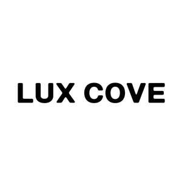

Trade Mark Journal No.2025/034 22 August 2025
UK00004246459 8 August 2025 (3,10,21)

- Class 3
- Skin make-up; skin masks [cosmetics]; colour cosmetics for the skin; make-up; skin moisturizers used as cosmetics; skin moisturizer masks; cosmetics for use in the treatment of wrinkled skin; skin moisturizer; skin moisturiser; skin moisturisers; facial makeup; skin cleansers [cosmetic]; skin lotions; lotions for the skin; moisturising skin lotions [cosmetic]; skin care cosmetics; skin lotion; cosmetic creams for the skin; skin creams [cosmetic]; skin creams [for cosmetic use]; skin masks; cosmetics for use on the skin; moisturising skin creams [cosmetic]; cosmetics for the treatment of dry skin; makeup; skin cream [for cosmetic use]; skin toners [cosmetic]; cosmetic creams for dry skin; make-up for the face; skin lighteners; make-up for the face and body; skin creams; creams for the skin; skin balms [cosmetic]; skin care creams [cosmetic]; cosmetic creams for skin care; skin cleansing lotion; skin recovery creams [cosmetics]; body and facial creams [cosmetics]; cosmetics for protecting the skin from sunburn; skin fresheners [cosmetics]; skin lightening compositions [cosmetic]; make-up preparations for the face and body; eye make-up; skin relief serum [cosmetic]; skin care oils [cosmetic]; skin cleansing cream; skin hydrators; make-up removing lotions; skin emollients; cosmetic skin fresheners; skin whitening creams; creams (skin whitening -); moisturizing preparations for the skin; skin lightening creams; skin whitening preparations [cosmetic]; facial moisturisers [cosmetic]; cosmetic creams for firming skin around eyes; cosmetic skin enhancers; body and facial gels [cosmetics]; cream for whitening the skin; whitening the skin (cream for -); make-up removing creams; cosmetic preparations for skin firming; facial creams [cosmetics]; skin texturizers; oils for the skin; eye makeup; skin toner; exfoliants for the cleansing of the skin; exfoliants for the care of the skin; milky lotions for skin care; cosmetic preparations for skin care; skin care (cosmetic preparations for -); clay skin masks; make-up remover; skin hydrators for cosmetic purposes; eye make-up removers; lip makeup; make-up removers; non-medicated skin serums; skin conditioning creams for cosmetic purposes; skin care mousse; make-up primer; skin whitening preparations; foundation make-up; make-up foundation; creams for firming the skin; natural makeup; moisturising body lotion [cosmetic]; skin conditioners; facial gels [cosmetics]; skin, eye and nail care preparations; hand masks for skin care; skin fresheners; tissues impregnated with a skin cleanser; skin cleansing cream [non-medicated]; cosmetic facial lotions; facial lotions [cosmetic]; cosmetic preparations for skin renewal; body creams [cosmetics]; eye makeup remover; skin cleansers [non-medicated]; skin foundation; foot masks for skin care; facial cleansers [cosmetic]; facial concealer; wrinkle removing skin care preparations; pores tightening mask packs used as cosmetics.
- Class 10
- Electric facial aesthetic treatment apparatus, other than facial steamers; electric esthetic massage apparatus; facial aesthetic treatment apparatus using ultrasonic waves; LED facial aesthetic treatment apparatus; electric esthetic massage apparatus for household purposes; esthetic massage apparatus; massage apparatus, electric or non-electric; electric scalp massagers for household use; therapeutic facial masks; bio therapeutic facial masks; electric massage apparatus for personal use.
- Class 21
- Cases adapted for cosmetic utensils; toiletry cases; cases for toiletry articles; applicators for cosmetics; cosmetic spatulas; droppers for cosmetic purposes.
Sky Austria Ltd